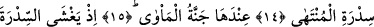
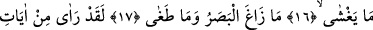
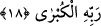

GÖZÜ KAYMADI
VE SINIRI AŞMADI
12. Onun gördükleri hakkında şimdi kendisi ile tartışacak mısınız?
13. Andolsun onu, önceden bir defa daha görmüştü.
14. Sidretü’l-Müntehâ’nın yanında.
15. Cennetü’l-Me’vâ da onun yanındadır.
16. Sidre’yi kaplayan kaplamıştı.
17. Gözü kaymadı ve sınırı aşmadı.
18. Andolsun o, Rabbinin en büyük âyetlerinden bir kısmını gördü.
“Onun gördüğünden kuşku mu duyuyorsunuz?” Yâni Muhammed (a.s.)’ı tekzîb
ederek ayne’l-yakîn Cibrîl’in sûretini görmesi husûsunda onunla tartışıyor musunuz?
Müşriklerin Peygamber (s.a.)’in gördüğü şeyden kuşku duymalarının (zikrediliş) nedeni,
Nebî (a.s.)’nin Cibrîl’i gördüğünü kendilerine haber verdiği zaman buna şaşırıp inkâra
kalkışmalarıdır.
Ben de diyorum ki, Rasûlullah (s.a.)’in gördüğü şey hakkında kendisine karşı
müşriklerin hitâbından anlaşılacağı üzere, Rasûlullah’ın Cibrîl’i gördüğü hakikatı
zâhiren ortaya çıkmaktadır. Aynı zamanda Cibrîl (a.s.)’ın görülmesi, insan şekline
intikâl etme vaktine kadar devam etmiştir. Eğer Cibrîl (a.s.) aslî sûretinin dışında da
olsa devamlı Nebî (a.s.) tarafından görülmüştür.
Hasan-ı Basrî ve bir grup âlim “onu güçlü kuvvetli biri (Cebrâîl) öğretti” âyetinin,
kemâl-i kudret ve kuvvetine delâlet etmesi hasebiyle Allah’a âid olduğuna; “zû
mirra”nın “işlerin ve hükümlerin sağlam yapıcısı” mânâsında olduğuna işâret
etmişlerdir. Bu vahyin vâsıtasız bir mekânda Muhammed (a.s.)’ın istivâ ederek ufuk-ı
a’lâ’da yâni semâvâtın üzerinde bulunduğu bir sırada gerçekleştiğini, yaklaşanın da
Allah olduğunu beyân etmişlerdir.
Sonra Hz. Muhammed (s.a.) Hz. ahadiyyete yakınlaştı, yâni dergâh-ı ulûhiyete menzil
ve mekân olarak değil derece ve mertebeyle yakınlaştı. “Fetedellâ” sonra eğildi, yâni
Allah’a hizmet secdesi yaptı. Çünkü bu mertebeye bu hizmeti sâyesinde ulaşmıştı. Sonra
yeniden hizmet vazifesini yerine getirdi ve secde etti. Secdede aynı zamanda yakınlık